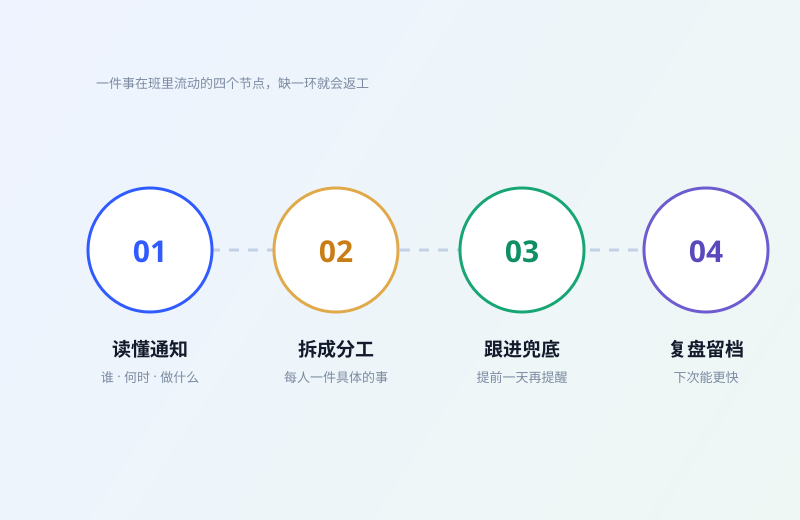

读懂通知
先回答三个问题：谁要交、什么时候交、交什么格式。自己没搞清楚，转发出去只会制造混乱。
04 / 班长日常
老师、同学、社团、教务，四边的信息在我这里汇合， 再由我翻译成大家愿意看的样子。做久了会发现，这份工作七成靠沟通，三成靠表格。
工作流
缺哪一环，最后都会变成返工。

先回答三个问题：谁要交、什么时候交、交什么格式。自己没搞清楚，转发出去只会制造混乱。
把“大家交一下材料”拆成“你负责表格、他负责照片、我今晚八点前汇总”。具体到人和时间。
截止前一天再提醒一次；有人没交就单独问原因，不公开点名。最后总得有人把缺口补上。
把这次用到的模板、名单、时间节点存下来。下次同类事情，能少走一半弯路。
一学期
按时间顺序记，方便以后回看。
收集信息、建群、确认联系方式，把班级的“基础设施”先搭好。
报名、训练、后勤分工。第一次感受到“分工清楚”对一场活动有多重要。
一边收作业一边赶自己的主页，学会了把大任务拆成每天半小时。
整理复习资料、约自习教室，让大家至少在同一个地方一起焦虑。
“事情交给我，就不用再有人惦记第二遍。”
会占时间，但也能逼我把时间用得更紧。我的办法是把班级事务集中在固定时段处理， 不让自己一天到晚都在“随时待命”。
先私下问原因，很多时候不是不愿意，而是没看懂要求或者忘了。 把要求说具体、把截止时间说清楚，比在群里反复催有效。
一是课程作业，二是想有个地方把这些零零散散的经验放好。 写下来的过程，比结果更有用。